Tree
Tree
「樹」。樹是一種很特別的圖。樹的定義是：任兩點之間都相通，並且沒有「環」的圖。「環」是指繞圈子的循環路線。
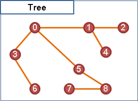樹的定義對初學者來說或許太過抽象。換個說法吧：一棵樹可想做是由一個點開始，藉由許多條邊不斷地延伸拓展到其他點，而且點和邊都不會重複地被拓展到。

Node
「節點」。進行延伸拓展的點、被延伸拓展到的點，稱作「節點」，也就是說樹上的點都是「節點」。
【註：為了方便，以下仍稱呼「點」。】
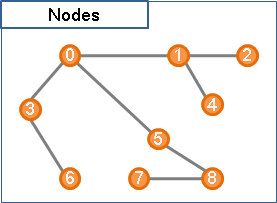Branch
「枝」。延伸拓展所用到的邊稱作「枝」，也就是說樹上的邊都是「枝」。一個點藉由邊往外延伸拓展，稱作「分枝Branching」。
【註：為了方便，以下仍稱呼「邊」。】
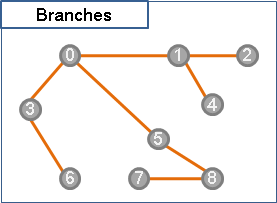Root
「根」。方才提到，一棵樹可想做是由一個點開始分枝──這個點便是「根」。一棵樹上的每一個點都可以作為根。
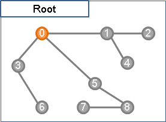Leaf
「葉」。在一棵樹上選定根後，由根開始不斷分枝，途中所有無法繼續分枝的點皆是「葉」。
也可以不選定根，這種情況下，只連著一條邊的點都是「葉」。
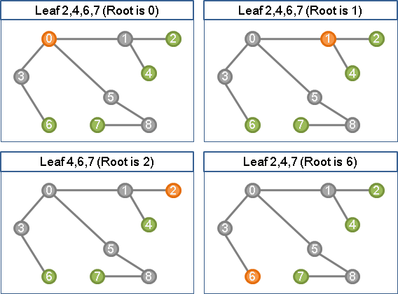如果樹上總共只有一個點，那麼此點既是根、也是葉。
Level
「層」。在一棵樹上選定根後，按照拓展的順序（也就是按照每個點離根的距離），可以將樹上的點分層次，使得樹上每一個點都擁有一個層數。如果改變根，那麼分層的結果就會不同。
還有另一種比較少見的分層方式，是設定所有葉在同一層，由葉開始計算層數。
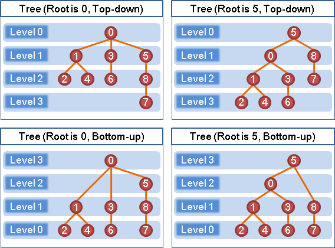Parent & Child
「父親」與「小孩」。在一棵樹上選定根後，以邊相連的任兩點，靠近樹根者相對地稱作「父親」，靠近樹葉者相對地稱作「小孩」。
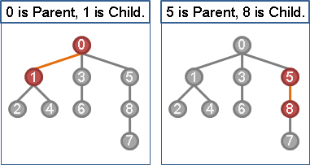一個點的父親，是指與其相鄰的點當中，較此點靠近樹根者，為其父親。父親只會有一個，特例是：樹根沒有父親。
一個點的小孩，是指與其相鄰的點當中，較此點靠近樹葉者，為其小孩。小孩可以是任意多個，特例是：樹葉沒有小孩。
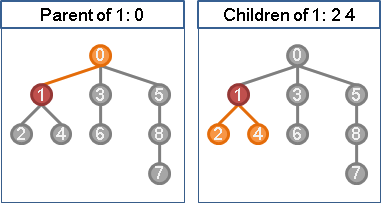Ancestor & Descendant
「祖先」與「子孫」。在一棵樹上選定根後，一個點的父親、父親的父親、……皆是此點的「祖先」。一個點的小孩、小孩的小孩、……皆是此點的「子孫」。
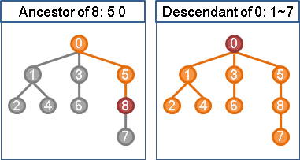Directed Tree
在一棵樹上選定樹根後，可以把邊的方向設定成分枝的方向、遠離樹根的方向；也可以把邊的方向設定成朝向樹根的方向，但是這種情況比較少。
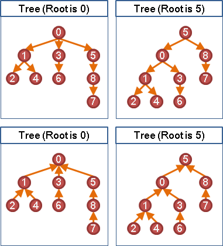Weight
一棵樹可以有權重。當邊擁有權重時，一棵樹的權重等於樹上所有邊的權重總和。
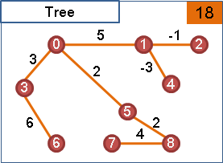Forest
「森林」。很多棵樹稱作一叢「森林」。只有一棵樹也是「森林」。
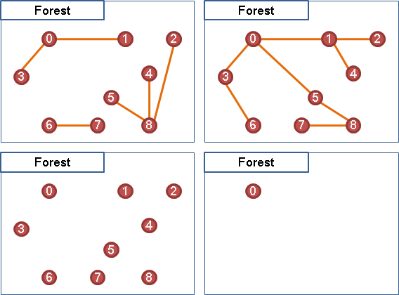樹的特性
1. 樹沒有環。 2. 樹上所有點之間都相連通。 3. 沒有環的圖，就是樹或森林。 沒有環的圖、連通的圖，就是樹。 4. 任意兩點之間只有唯一一條路徑。 5. 在樹上任意添加一條邊，就會產生環。 6. 在樹上任意刪除一條邊，一顆樹就裂成兩棵樹。 7. 邊數等於點數減一。
UVa 615 599